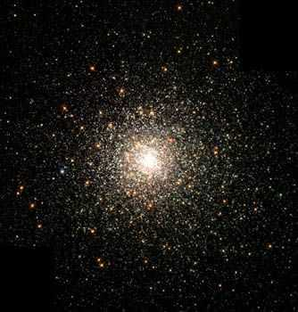

Credit: The Hubble Heritage Team (AURA/STScI/NASA)
Globular clusters (GCs) are spheroidal collections of 100,000 to a million stars found orbiting in the halos of all large galaxies. Some GCs have been shown to be almost as old as the age of the Universe, making them among the oldest stellar populations known. With diameters of only several tens to about 200 light years, they are also some of the most densely packed stellar systems in the Universe.
GCs have the useful property that all their stars were formed at the same time and from the same cloud of gas, and therefore constitute a ‘single stellar population’. Due to the simplicity of their stellar population and the close proximity of the ~150 GCs in the Milky Way, Galactic GCs have been the proving ground for many of the advances in our understanding of stellar evolution.
There is, however, one aspect of the stellar populations of GCs that is unique. The extremely high packing density of stars in the centres of GCs means that interactions, and even collisions, between stars can occur. As a result, GCs are home to some exotic classes of stars, including blue stragglers, low-mass X-ray binaries and millisecond pulsars. Recent research has also shown that the close proximity of stars in GCs causes their outer layers to be contaminated by stellar winds from nearby stars and supernova debris, giving them unique chemical properties.
The majority of GCs, in both the Milky Way and other galaxies, contain primarily old stars. Their metallicities range from extremely metal-poor (less than 1/100th of the solar value) up to values close to what we see in the Sun. It is this variation in metallicity that gives rise to the two distinct types of GC in galaxies. In the Milky Way at least, the redder GCs are more metal-rich and associated with the galactic bulge, while the bluer GCs are more metal-poor and tend to be associated with the halo.
The existence of two different types of GCs may provide a powerful insight into their formation, and may have serious implications for models of galaxy formation. Although a clear explanation for the presence of two types of GC has yet to be found, some of the scenarios that have been suggested include:
- A multi-phase primordial collapse where GCs form in a primordial gas cloud that collapses to form stars in two distinct phases,
- Violent, gas-rich galaxy mergers where GCs are formed from the disturbed cold gas of the merging galaxies,
- The accretion of dwarf galaxies which bring their own GCs with them when they merge with the host galaxy,
- Secular evolution in disk where the cold gas in the spiral arms of galaxies can form large star clusters.
Whether any or all of these ideas contribute to the formation of two distinct GC types remains to be seen, and research into the nature and origin of GCs in galaxies is an area of active research.